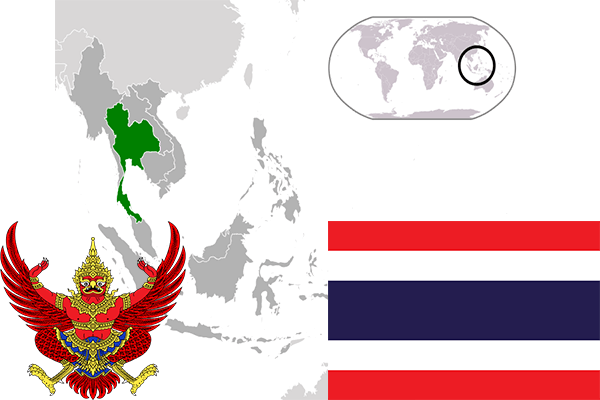

To`liq nomi: Tailand Qirolligi
Region: Janubiy Sharqiy Osiyo
Qonunchilik shakli: Konstitutsiyali monarxiya
Mustaqillik kuni: -
Poytaxt: Bangkok
Maydoni: 514 000 km²
Chegaradosh davlatlari: Kambodja, Myanma, Malayziya
Aholisi: 70 498 494 (2013-yil)
Aholi zichligi: 130,5 /км²
Aholining o`rtacha yoshi: 74,60 yil
Rasmiy tili: Tay tili
Dini: Buddizm
Pul birligi: Baht
Telefon prefiksi: +66
Internet domen: .th
Xalqaro tashkilotlarga a`zoligi: BMT
Dengiz va okeanlarga chiqishi: Janubiy Xitoy dengizi, Hind okeani
YIM: Butun: $964,5 mln
Yirik shaharlari: Bangkok